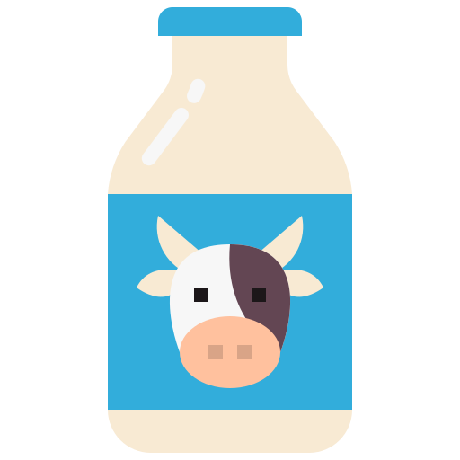

O que é alergia alimentar?
A alergia alimentar é uma reação adversa a um determinado alimento, envolvendo um mecanismo imunológico com apresentação clínica muito variável, com sintomas que podem surgir na pele, no sistema gastrointestinal e respiratório. As reações podem ser leves, como simples coceira nos lábios, até reações graves que podem comprometer vários órgãos. A alergia alimentar resulta de uma resposta exagerada do organismo a uma determinada substância presente nos alimentos.
Manifestação
As manifestaçoes mais comuns as reações que envolvem a pele (urticária, inchaço, coceira, eczema) e o aparelho gastrintestinal (diarreia, dor abdominal, vômitos). Manifestações mais intensas, acometendo vários órgãos simultaneamente como pele e trato respiratório (anafilaxia), também podem ocorrer. Nas crianças pequenas, pode ocorrer perda de sangue nas fezes, o que pode ocasionar anemia e retardo no crescimento. Sintomas respiratórios (tosse, sibilância e rinite) isolados são extremamente incomuns.

Diagnostico
O diagnóstico depende de história clínica minuciosa associada a dados de exame físico, que podem ser complementados por testes alérgicos. Na história clínica, é fundamental que o paciente ou seus pais, no caso das crianças, auxilie fornecendo detalhes sobre os alimentos ingeridos rotineiramente ou eventualmente. Em algumas situações, é possível correlacionar o surgimento dos sintomas com a ingestão de determinado alimento. Em outras ocasiões, o quadro não é tão evidente, necessitando de história mais detalhada. Isso ocorre principalmente quando as reações ocorrem horas após a ingestão do alérgeno. A alergia alimentar ocorre mais frequentemente nas crianças pequenas, e o leite de vaca e o ovo são os alimentos mais comuns. Apesar de muitas vezes incriminado (pelos pais e avós) como causa de alergia alimentar, o chocolate raramente causa alergia. Nestes casos, é preciso pesquisar alergia às proteínas do leite de vaca ou da soja, usadas em sua fabricação. Nos adultos, o camarão é queixa frequente. A alergia a amendoim e castanhas no geral tem crescido muito em crianças e adultos.
Tratamento
Até o momento, não existe um medicamento específico para prevenir a alergia alimentar. Uma vez diagnosticada, são utilizados medicamentos específicos para o tratamento dos sintomas (crise), sendo de extrema importância fornecer orientações ao paciente e familiares para que se evite novos contatos com o alimento desencadeante. As orientações devem ser fornecidas por escrito visando a substituição do alimento excluído e evitando-se deficiências nutricionais até quadros de desnutrição importante, principalmente, nas crianças. O paciente deve estar sempre atento verificando o rótulo dos alimentos industrializados buscando identificar nomes relacionados ao alimento que lhe desencadeou a alergia. Por exemplo, a presença de manteiga, soro, lactoalbumina ou caseinato apontam para a presença de leite de vaca. Todas as orientações devem ser fornecidas aos pacientes e familiares.
Prevenção
Atualmente, infelizmente não existe uma prevenção. No entanto, atualmente a exposição oportuna dos pacientes aos principais alérgenos no momento da introdução de alimentação complementar aos seis meses parece proteger das alergias alimentares. O aleitamento materno deve ser sempre estimulado. Os pacientes de alto risco de alergia alimentar (pacientes com dermatite atópica moderada a grave, alergia alimentar ou filhos/irmãos de indivíduos com doenças alérgicas) também devem ser expostos a todos os alimentos aos seis meses sem necessitar adiar a introdução de alguns alimentos como forma de prevenção. O benefício do uso de formulas infantis conhecidas como hipoalérgicas para recém-nascidos que não podem ser amamentados ao seio ainda não está bem estabelecido.
Principais alergênicos

Lactose
ovo
Peixe
Gluten
Crustáceos
Amendoim
Amendoas
Lactose
ovo
Peixe
Gluten
Crustáceos
Amendoim
Amendoas